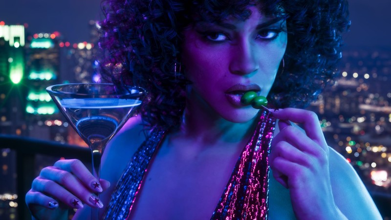
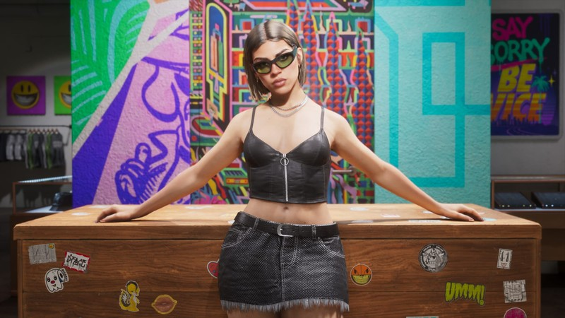

GTA6 예약 차이 스탠다드 얼티밋 에디션 비교, 예약 특전은 어디까지 공통일까?
GTA6 예약 걸어두려고 스토어에 들어갔다가 에디션이 두 개라서 멈칫하신 분들 많으시죠. 저도 처음엔 '예약 특전은 비싼 쪽에만 붙는 거 아니야?' 싶었어요. GTA6는 11월 19일 PS5와 Xbox Series X|S로 나와요. 락스타가 6월 24일 사전예약 소식을 발표했고 예약은 이튿날인 25일에 열렸어요. 에디션은 그때 두 가지로 공개됐거든요~ 그 발표를 하나씩 읽어 보니 특전은 에디션과 상관없이 똑같이 들어가고 얼티밋에서 갈리는 건 따로 있더라고요. 출시까지 43일 남은 지금, 그 경계를 한 번에 정리해 볼게요.
결론부터, 특전은 공통이고 얼티밋 차액은 따로 가요
빈티지 바이스 시티 팩은 스탠다드와 얼티밋 모두 받고, 얼티밋의 추가 금액 23,000원은 스토어에서 챕터별 아이템을 더 얹는 값이에요.
6월 25일 예약 개시 때 보도된 국내 가격은 스탠다드 89,800원, 얼티밋 112,800원이었고, 두 금액의 차이가 23,000원이에요. 가격은 바뀔 수 있거든요. 구매 전에 PS Store·Microsoft Store 현재 페이지에서 한 번 더 확인해 보세요.
해외 가격도 같은 결이에요. 락스타 발표 기준으로 스탠다드 79.99달러, 얼티밋 99.99달러라서 얼티밋이 20달러 더 비싼 구조는 국내외가 똑같잖아요. 그러니 에디션을 고를 땐 '특전이 있나 없나'가 아니라 '챕터별 아이템까지 갖고 싶은가'로 보시면 돼요.
스탠다드와 얼티밋, 표로 한 번에 보면요?
보도된 에디션은 스탠다드와 얼티밋 두 가지이고 제가 읽은 보도엔 다른 에디션 언급이 없었어요. 표에서 갈리는 줄은 가격과 챕터별 추가 아이템 두 개뿐이에요.
| 항목 | 스탠다드 | 얼티밋 |
|---|---|---|
| 국내 가격 (6/25 보도) | 89,800원 | 112,800원 |
| 빈티지 바이스 시티 팩 | 포함 | 포함 |
| 챕터별 추가 아이템 | — | 프리미엄 차량·무기·의상 등 |
| GTA+ 1개월 무료 | 디지털 사전구매 혜택 | 디지털 사전구매 혜택 |
| 사전다운로드 | 11월 12일 (디지털) | 11월 12일 (디지털) |
표를 보면 에디션이 두 가지인데도 일정과 사전다운로드는 똑같다는 게 눈에 들어오죠. 결국 고민할 건 23,000원의 값어치 하나뿐입니다.
공통 특전 빈티지 바이스 시티 팩은 언제까지 받을 수 있나요
빈티지 바이스 시티 팩은 11월 20일 이전에 사전예약하거나 구매한 GTA6라면 에디션 가리지 않고 들어가요. 락스타가 쓴 문장도 '11월 20일 이전의 모든 사전예약과 구매'라서, 출시일인 11월 19일 당일 구매까지가 대상이고 20일부터는 빠지는 걸로 읽혀요. 예약 자체에는 따로 마감이 안 나와 있고, 기한이 걸린 건 이 특전 하나예요. 다만 한국 시각으로 몇 시에 끊기는지는 발표된 게 없어서, 마지막 날에 몰아서 사기보다 여유 있게 예약해 두시는 쪽이 안전해요.
팩 구성은 보도 기준으로 이런 모습이에요. 매체마다 표기가 조금씩 달라서 큰 줄기만 적을게요.
- '55 Vapid Stanier 세단
- 차고
- 제이슨과 루시아 의상

빈티지 바이스 시티 팩 소식에 실린 락스타 보도 이미지예요. 네온빛 야경 속에서 칵테일 잔을 든 인물 컷이라, 구성 아이템 컷이 아니라 분위기 컷이랍니다.
이미지 출처: Rockstar Games 보도 이미지, gamingtrend 게재분 · 네이버 본문엔 받아서 재업로드 권장
얼티밋에만 붙는 건 정확히 뭔가요
얼티밋에만 붙는 건 제이슨과 루시아의 이야기 전반에 걸쳐 해금되는 프리미엄 차량·무기·의상이에요. 제이슨과 루시아는 이번 작품의 두 주인공이고 무대는 바이스 시티인데요, 그 이야기 흐름을 따라 아이템이 풀리는 셈이에요. 챕터가 넘어갈 때마다 새 아이템이 풀리는 방식이라, 처음부터 전부 쥐고 시작하는 구성은 아니라고 합니다.
인벤글로벌이 든 예시는 아래 세 가지인데요, 어디까지나 보도 기준 예시일 뿐 확정 목록은 아니에요.
- 차량: '95 Grotti Cheetah
- 무기: Hawk & Little Morgan Revolver
- 의상: Vice City Style

얼티밋 에디션 소식에 실린 락스타 보도 이미지예요. 벽화 앞에 선글라스 쓴 인물이 서 있는 컷이고, 구성 아이템을 하나씩 짚은 컷은 아니랍니다.
이미지 출처: Rockstar Games 보도 이미지, gamingtrend 게재분 · 네이버 본문엔 받아서 재업로드 권장
그래서 공통 특전만 챙기실 거면 스탠다드로도 같은 팩을 받고, 챕터별로 풀리는 컬렉션까지 모으고 싶으면 얼티밋이 맞는 길이에요. 같은 '의상'이라도 팩에 든 의상은 공통 특전이고, 'Vice City Style'은 얼티밋 예시로 따로 보도된 항목이라 헷갈리지 않게 구분해 두세요.
GTA+ 1개월 무료는 누가 받나요
GTA+ 1개월 무료는 락스타 발표 기준으로 '디지털 사전구매' 혜택이에요. 락스타 원문은 '디지털 사전구매'라고만 적었고 에디션이나 스토어 한정은 따로 붙이지 않았어요. 플랫폼과 에디션 적용 범위는 보도마다 엇갈려서, 구매하실 스토어 판매 페이지에서 직접 확인해 보시는 게 좋아요.
물리판과 사전다운로드는 어떻게 되나요
물리판은 디스크 없이 다운로드 코드가 든 박스로 나오고, 디지털 사전구매자는 11월 12일부터 미리 내려받을 수 있어요. 구매처는 락스타 발표 기준으로 PlayStation Store, Microsoft Store, Rockstar Games Store, 글로벌 리테일러예요. 예약은 현지 시각으로 6월 25일 자정에 열렸고, 오늘 기준 사전다운로드까지는 36일 남았어요. 저장 공간은 11월 12일 전에 비워 두세요. 물리판도 락스타 설명대로 같은 날부터 나오고 박스 안 코드로 내려받으니 준비는 같아요. 일정은 표로 모아 볼게요.
| 날짜 | 일정 |
|---|---|
| 6월 25일 | 사전예약 개시 (락스타 발표는 6월 24일) |
| 11월 12일 | 사전다운로드 시작, 물리판 출시(코드 박스 수령) 시작 |
| 11월 19일 | 출시 (PS5, Xbox Series X|S) |
| 11월 20일 이전 | 빈티지 바이스 시티 팩 포함 구매 기한 (11월 19일까지로 읽혀요·마감 시각은 발표 없음) |
자주 묻는 질문
Q. 6월 발표 뒤에 가격이나 구성이 바뀌었나요?
제가 찾아본 범위에서는 6월 24일 락스타 발표와 25일 예약 개시 이후 바뀌었다는 공식 안내를 못 봤어요. 그래도 예약 걸기 전에 스토어 판매 페이지에서 현재 가격과 구성을 한 번 더 확인해 보세요.
Q. 얼티밋에 들어가는 아이템 전체 목록이 나왔나요?
아직 확정 목록은 못 봤어요. 인벤글로벌은 세 가지를 예시로 들었고, 다른 매체는 더 적기도 해서 보도마다 목록이 달라요. 확정 목록으로 보긴 어려워서 판매 페이지에 정리되면 그걸 기준으로 보세요.
Q. GTA6는 PC로도 나오나요?
출시 플랫폼은 PS5와 Xbox Series X|S이고 PC 일정은 공식 발표가 없어요. 소식이 나오면 따로 정리해 올릴게요.
GTA6 예약 차이 정리
정리하면 빈티지 바이스 시티 팩은 11월 20일 이전 구매라면 스탠다드든 얼티밋이든 똑같이 받고, 얼티밋의 +23,000원은 챕터별로 풀리는 프리미엄 차량·무기·의상 값이에요. 에디션 고르다 한참 멈칫했던 저처럼 헷갈리셨다면 이 경계 하나만 기억해 두시면 돼요 ㅎㅎ. 제이슨과 루시아가 기다리는 바이스 시티에 느긋하게 입성해 보세요.
✔ GTA6 같이 보기 좋은 내용
· GTA6 출시일 11월 19일 확정, 한국 가격 89,800원 PC 출시 여부 PS5 에디션 정리
· GTA6 사전예약 6월 25일 시작! 가격, 에디션, 출시일 정리, PC는?
참고한 곳 (2026.10.07 기준)
· 락스타게임즈 사전예약 보도자료 (Game Developer 전재)
· 인벤글로벌 에디션·예약 특전 보도
· JKN 국내 가격 보도